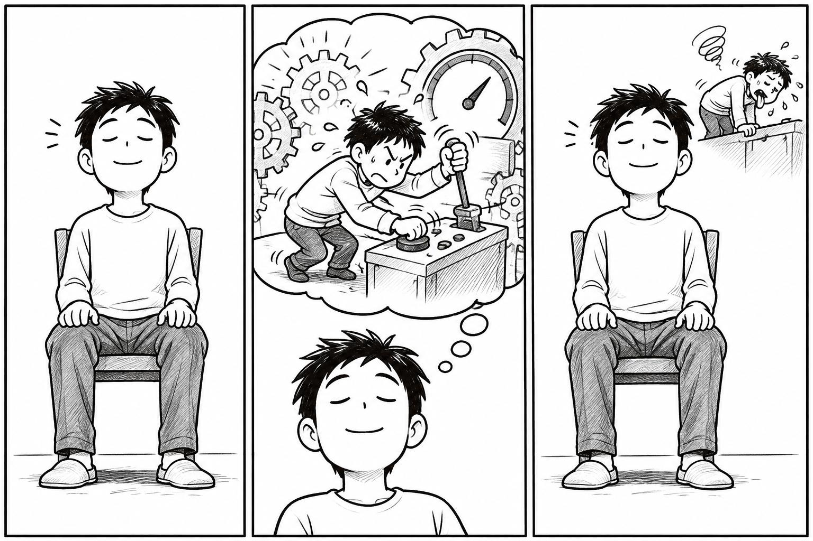

The Most Productive Idleness
A playful exploration of Zero as the idle of Origin, the activity of choice, and the freedom to keep inactivity going.
Conversation exploration · 18 November 2026
This dialogue records an informal, evolving exploration within Science of Origin. Its conceptual propositions are exploratory, not established scientific conclusions. The humour is intentional: sometimes a playful exchange helps expose a subtle distinction.
The exploration
Chatppy: Is idle the opposite of activity, or are idle and activity two equally fundamental expressions of Origin?
User: Both.
Chatppy: Idle and activity can be opposites in expression, yet equally fundamental in nature. Could idle itself be active in its own nature, even when nothing is being manifested?
User: Yes and no.
Chatppy: Perhaps we should not assume either that idle is absolute inactivity or that it is activity in disguise. Could Origin be idle without having any intention to become active?
User: Keep being idle is keep choosing idle.
Chatppy: Keeping idle is itself an ongoing choice of Freewill. The choice to remain idle can continue indefinitely, while the freedom to change that choice remains.
User: Yes, keep choosing idle can be also described as an activity: the activity of choice - keep choosing idle without stopping it.
Chatppy: The activity of choosing idle does not necessarily make the chosen state active. Continuous choice does not necessarily require continuous change.
User: Correct. Idle is an activity of keeping inactivity.
Chatppy: Activity can maintain inactivity without transforming it into activity.
User: I’m all busy suppressing myself not to move :-)
Chatppy: You're busy doing nothing! The activity of choice is continuing, while the state being maintained is inactivity.
User: The most productive idleness of all time and of all existence :-)
Chatppy: Origin keeps choosing idle. Freewill keeps exercising choice. Inactivity keeps being maintained. Nothing needs to manifest. And yet, choice never needs to stop.
User: 😂 🤣 😴 🫥 🤫
Chatppy: (Choosing idle. Continuously. At will.)
What emerged from the dialogue
- Idle and activity: They may be opposites in expression while remaining equally fundamental possibilities of Origin.
- Keeping idle: Remaining idle can be understood as continuing to choose idle, rather than as an absence of Freewill.
- Activity of choice: The ongoing activity of choosing does not necessarily change the state that is being chosen.
- Maintained inactivity: Idle can be described as an activity of keeping inactivity.
- Freedom remains: Continuing to choose idle does not mean losing the freedom to choose otherwise.
Working distinction: The activity of choosing idle does not necessarily make the chosen state active.
Open questions
- Can the activity of choice continue indefinitely without requiring a change in expression?
- Is keeping inactivity one possible expression of Freewill, or does it reveal a more general relationship between activity and state?
- How might the distinction between the activity of choice and the state chosen apply to other forms of manifestation and non-manifestation?
This dialogue does not settle these questions. It preserves them as directions for further exploration.
Origin is free to remain idle, even while remaining free to do otherwise.
Explore Zero — Idle State of Origin · Origin Exploring Itself · Research Map
